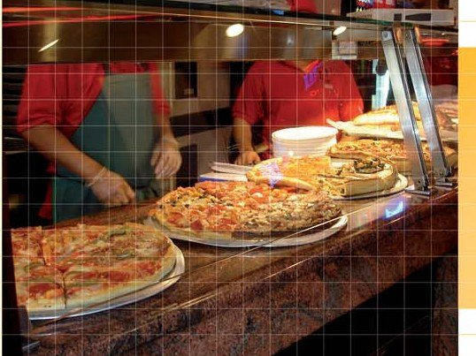
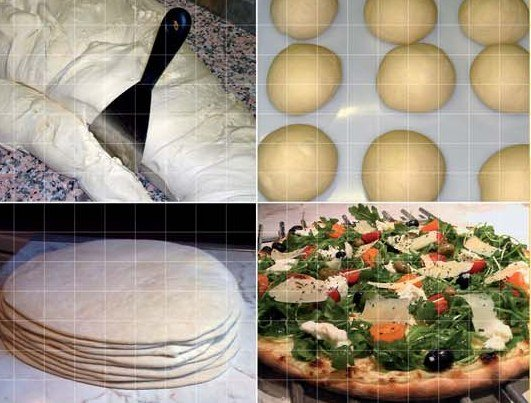
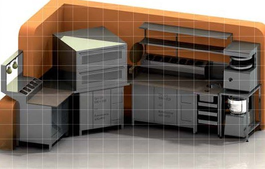
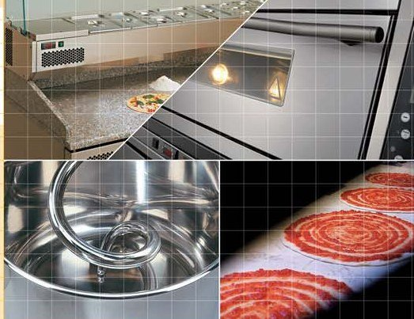
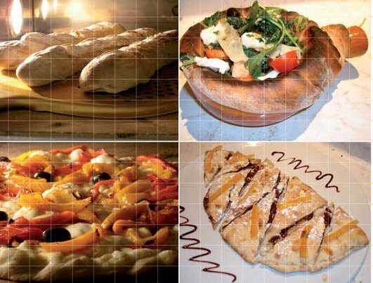
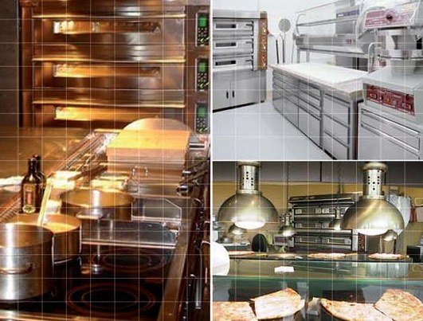

La pizza de A à Z. Nous créons l’excellence.
Une zone cuisine conçue sur mesure : appareils de préparation, cuisson et distribution intégrés, pour la régularité de vos fabrications.

Visuels extraits de la plaquette Pizza Concept (impression) : photographies haute définition à fournir.
« Un seul objectif : offrir le meilleur de la qualité »
Sopacom Concept « Inspiration Pizza »
La pizza est peut-être, de tous les plats populaires, celui où l’ignorance devrait être la moins tolérée : misez sur l’expertise d’un spécialiste pour votre réussite. Un seul objectif : offrir le meilleur de la qualité.
Ce travail d’analyse, associé aux méthodes de travail de Sopacom Concept, garantit la régularité de vos fabrications. C’est cette expertise, cette culture de la performance, qui est proposée avec le pizza concept. Avec ses équipes, Sopacom Concept perfectionne sans cesse ses concepts et peaufine ses propositions aux nombreux clients qui font appel à ses compétences.
Source : Plaquette « La PIZZA de A à Z » (PDF Sopacom Concept) · Site pizzaconcept.fr.

« Inspiration Pizza »
Une conception sur mesure
Pour chacune des réalisations, la zone cuisine diffère, mais il y a toujours un point commun : optimiser l’espace pour un maximum de fonctionnalité et de performance.
Sopacom Concept adapte sur mesure l’ensemble de ses appareils de préparation, de cuisson et de distribution, pour une intégration totale des équipements et pour donner une empreinte personnelle.
Source : Plaquette « La PIZZA de A à Z » (PDF Sopacom Concept) · Site pizzaconcept.fr.

« Le pizza-system »
Un concentré de savoir-faire
Débordé par un temps de service toujours plus court ? Maximisez votre productivité, garantissez votre qualité, optimisez votre rentabilité avec le pizza-system : il offre tout ce dont vous avez besoin dans une conception compacte et élégante.
De la conception de la pâte à la cuisson de la pizza, en passant par la fabrication du pâton, Sopacom Concept propose un équipement et des solutions simples. C’est la seule manière d’espérer atteindre l’objectif : la qualité.
Source : Plaquette « La PIZZA de A à Z » (PDF Sopacom Concept) · Site pizzaconcept.fr.

« Contribution invisible, succès visible »
Multiples applications
À une époque où l’équilibre alimentaire préoccupe, il est normal de s’interroger au sujet de la pizza : fait-elle grossir ? Peut-on en manger tous les jours ? Quelle quantité donner aux enfants ? Selon la plaquette, une pizza réalisée avec des produits frais de qualité, mangée régulièrement en diversifiant la garniture et en adaptant la quantité à la corpulence, accompagnée d’un fruit ou d’un produit laitier et d’une boisson non sucrée, constitue un repas équilibré.
Sopacom Concept propose ainsi une carte complète, entrée, plat et dessert, autour d’une base de pâte à pizza.
Source : Plaquette « La PIZZA de A à Z » (PDF Sopacom Concept) · Site pizzaconcept.fr. Affirmation nutritionnelle reprise de la plaquette, non vérifiée par Sopacom Industrie.

« Des pièces uniques pour vous seul »
Un résultat surprenant pour des lieux d’exception
Les solutions créées par Sopacom Concept sont des pièces uniques. Tout d’abord, les attentes du client sont étudiées ; puis, pour que sa vision devienne réalité, Sopacom Concept met ses compétences à sa disposition et bâtit le concept avec lui.
Optimisation des procédés et de la qualité, ainsi que réduction des coûts, constituent le résultat bien visible de ce partenariat. Jour après jour, Sopacom Concept contribue à la réussite de ses clients et à l’amélioration de la qualité.
Source : Plaquette « La PIZZA de A à Z » (PDF Sopacom Concept) · Site pizzaconcept.fr.

« Un projet clé en main »
La pizza de A à Z, assistance conseil
Les chances de succès sont bien plus grandes quand on partage l’expérience et le savoir-faire de spécialistes. Pour les investisseurs convaincus par ce concept séduisant, Sopacom Concept propose, en partenariat avec des experts de choix, d’élaborer un projet clé en main et de dévoiler les secrets des délices culinaires.
Selon la plaquette, « 48 h chrono » suffisent autour du concept complet pour former l’équipe : un challenge que Sopacom Concept se dit prêt à relever avec le client.
Source : Plaquette « La PIZZA de A à Z » (PDF Sopacom Concept). Délai de formation à confirmer par Sopacom.